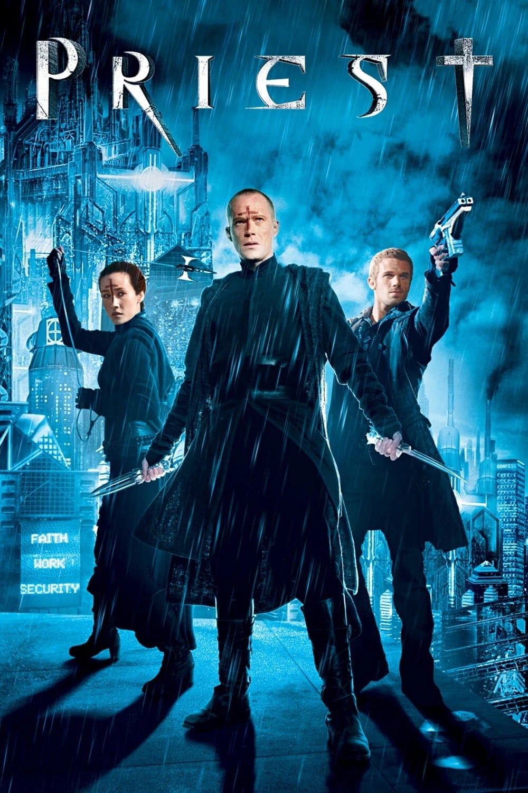

Мировая премьера: 13 мая 2011
Слоган: И один в поле воин.
Сюжет: В постапокалиптическом мире уже много веков идёт кровопролитная война между людьми и вампирами. Когда воин-пастырь узнаёт о новых нападениях, конфликт становится для него личным – похищена его племянница. Ему приходится нарушить священную клятву и отправиться за девушкой в логово вампиров – пока ещё есть кого спасать.
Режиссёр: Скотт Стюарт
В основе: Комикс "Священник" (Южная Корея, 1998-2007, автор – Мин-Ву Хунг)
В ролях:
| Пол Беттани | Пастырь |
| Кэм Жиганде | Хикс |
| Карл Урбан | Блэк Хэт |
| Мэгги Кью | Монахиня |
| Кристофер Пламмер | Монсеньор Орелас |
| Стивен Мойер | Оуэн Пейс |
| Лили Коллинз | Люси Пейс |
| Брэд Дуриф | Продавец |
| Алан Дэйл | Монсеньор Чемберлен |
| Мэдхен Амик | Шэннон Пейс |
Бюджет: $ 60 млн.
Кассовые сборы в США: $ 29 млн.
Кассовые сборы в мире: $ 78 млн.
Продолжительность: 1 ч. 20 мин.
Рейтинг: 5.7